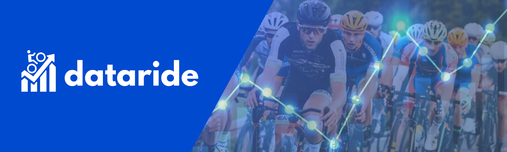

Insight :
1. The 2011-2012 Product_Category consists only of Bikes with a total of 64 Products.
2. The 2013-2016 Product_Category includes Bikes, Accessories and Clothing with a total of 130 Products.
3. The Product_Category with the most purchases is Accessories, and the highest revenue is from the Bikes category.
4. Product with the most purchases is Water Bottle-30 oz.
5. Product types Bikes consist of Touring, Mountain, and Road.
Recommendation :
Based on insights and data analysis, it is recommended to focus on adding product types from Product_Category Bikes and product variations from Product_Category
Accessories to increase sales in the next one year.
Report

Description
Dataride is a data analysis dashboard about bicycle sales that focuses on analyzing data and presenting it in the form of visualizations that are easy to understand.
in this case we analyze bicycle sales in Europe.
The project dashboard for bicycle sales in Europe is a comprehensive tool designed to provide detailed insight into the bicycle market in different European countries. The dashboard integrates multiple data sources to offer real-time analysis and historical trends, facilitating data-driven decision making for stakeholders including manufacturers, retailers, policy makers, investors and consumers.
The project dashboard for bicycle sales in Europe is a comprehensive tool designed to provide detailed insight into the bicycle market in different European countries. The dashboard integrates multiple data sources to offer real-time analysis and historical trends, facilitating data-driven decision making for stakeholders including manufacturers, retailers, policy makers, investors and consumers.
Insight and Recommendation
-
Insight :
1. The Product_Category consists of three categories: Accessories, Bikes and Clothing.
2. The best-selling products are Accessories and Clothing.
3. The highest total revenue is found on Product_Category Bikes.
4. United States is the country with the most purchases with total_order_quantity of 132731
Recommendation :
Based on insights and data analysis, it is recommended to maintain and focus the United States as the leading country in product sales in a way that meets consumer needs. As well as expanding Product_Category distribution in each country so that sales can be increased slowly. -
Insight :
1. Almost every year, the highest revenue comes from Females. However, in certain years, such as 2014 and 2016, there was a decrease in gender Females.
2. In 2013–2016, Gender Female had a total low order.
3. In 2011–2013, the Product_Category with the highest revenue was bikes. However, in 2014 and 2016, Product_Category Accessories had the highest revenue.
It's caused by:
a. From 2011 to June 2013, the Product_Category consisted only of Bikes.
b. In July 2014 and December 2016, the Product_Category only had 2 categories left (Clothing and Accessories)
c. In 2014, from August to December, there were no sales.
d. January to June 2015, Product_Category consists only of Bikes
4. Product_Category Accessories that get the most revenue are the Sport-100 Helmet, but for the most purchases, the Water Bottle and Patch Kit products.
5. Highest income earned by Gender Female on Product_Category Bikes in the age of Adults (35–64).
6. Most ordered by Gender Male on Product_Category Accessories in Adults (35-64).
Recommendation :
Based on insights and data analysis, it is recommended to obtain high revenues and total_orders in order to be able to focus on promotion and product innovation dedicated to Gender Female and Male adults (35-64)
-
Insight :
1. Age_Group Adult (35–64) is the age that dominates the highest earnings and most purchases.
2. The products with the highest Revenue are Mountain-200 Black and Mountain-200 Silver from Product_Category Bikes.
3. The product with the most purchases is the Water Bottle-30 from Product_Category Accessories.
4. Adults (35–64) get the highest purchase percentage of 50%.
Recommendation :
Based on insights and data analysis, we can develop innovative products in the category Accessories and Bikes specifically designed for Age_Group Adults. As well as more intensive promotions on Water Bottle, 30 oz. (in Product_Category Accessories) and Mountain-200 black or silver products. (in Product_Category Bikes)